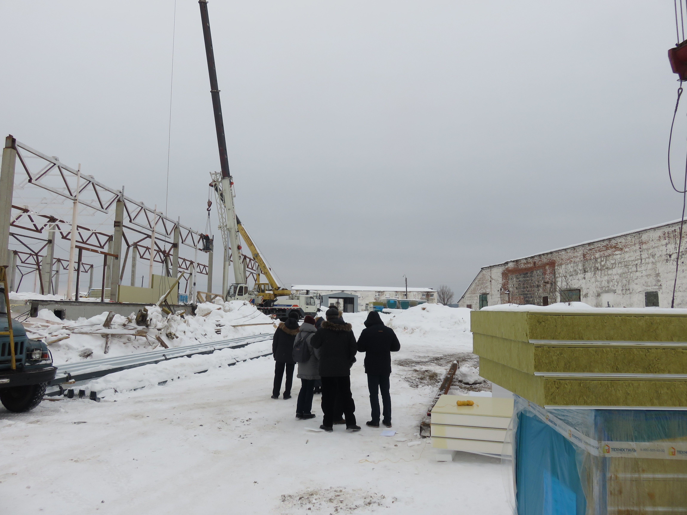
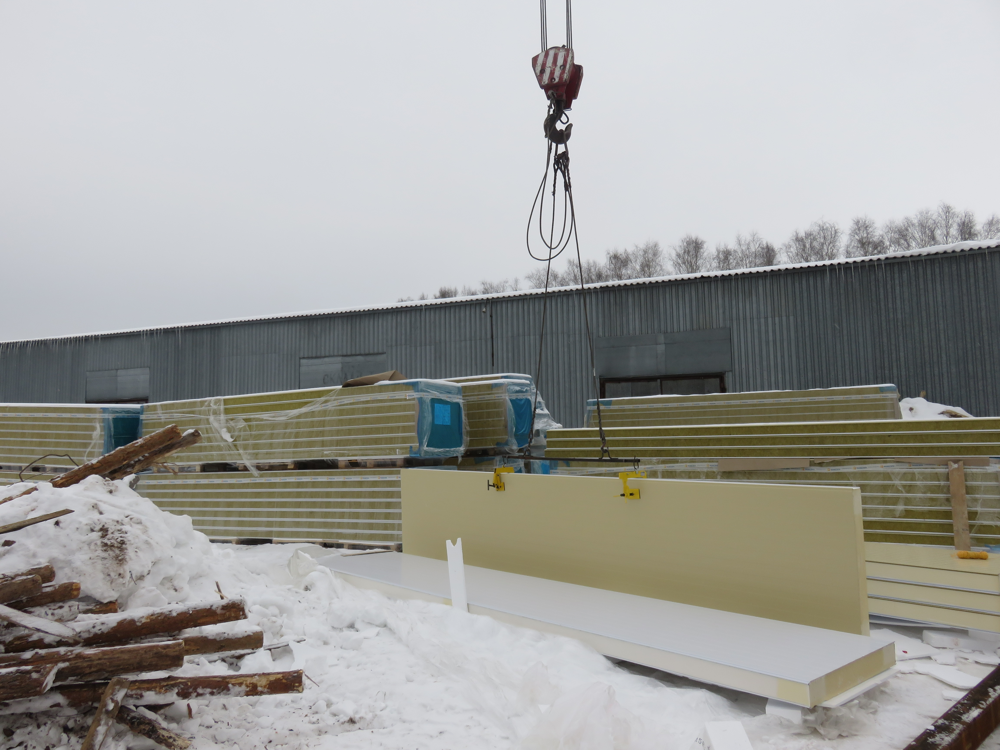
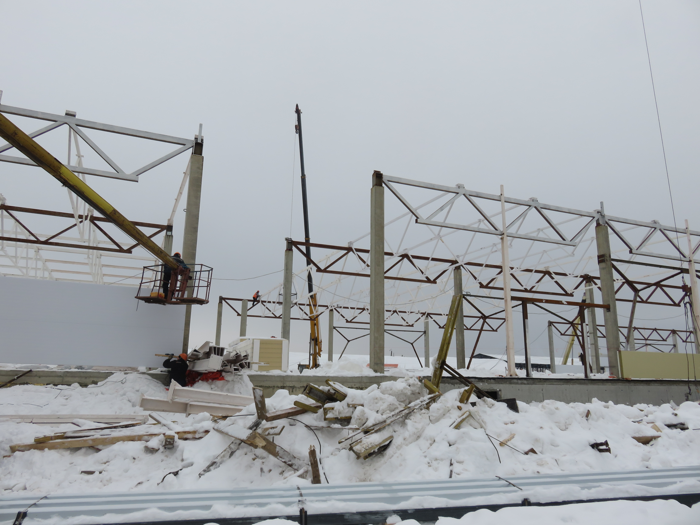
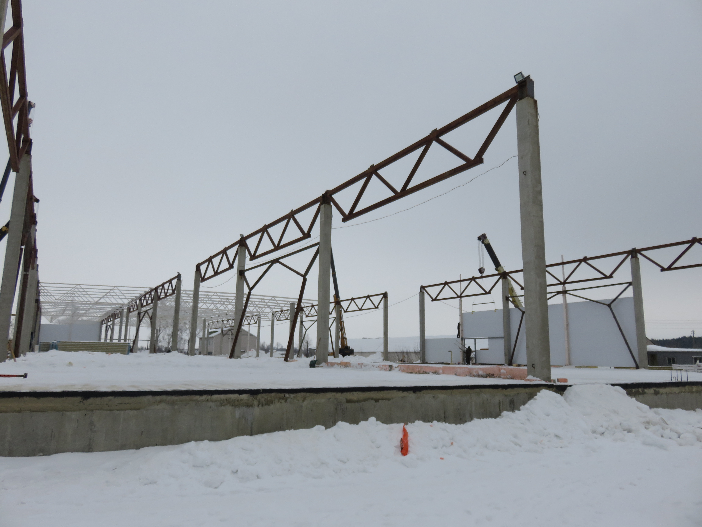
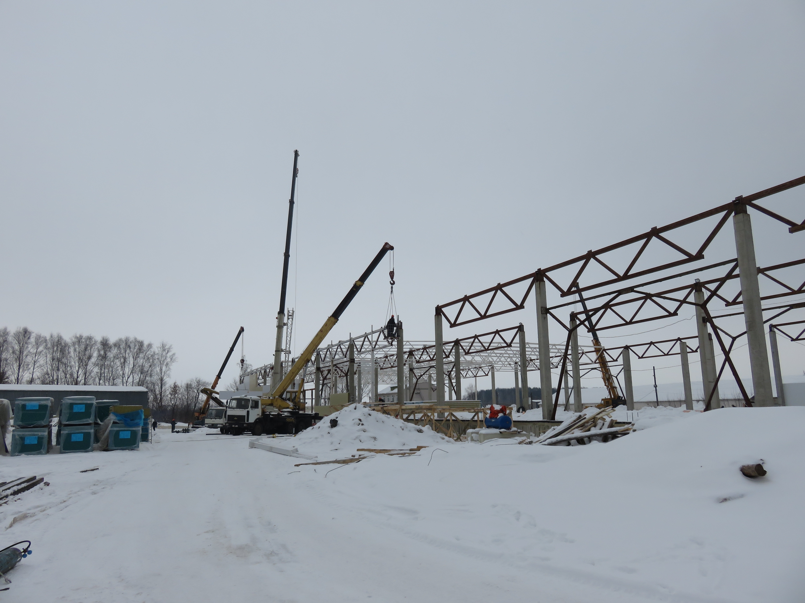

Реализация инвестиционного проекта ОАО «Птицефабрика «Иловайская»
1 февраля 2017 года АО МК «Фонд содействия кредитованию малого и среднего предпринимательства Тамбовской области» совместно с представителями АО «Россельхозбанк» и АО «Федеральная корпорация по развитию малого и среднего предпринимательства» был проведен осмотр места реализации инвестиционного проекта - ОАО «Птицефабрика «Иловайская» (строительство комплекса по переработке мяса птицы). Общая стоимость проекта превышает 417 млн. рублей.
Строительство данного комплекса относится к числу крупнейших инвестиционных проектов в Тамбовской области, реализуемых при содействии АО «Федеральная корпорация по развитию малого и среднего предпринимательства».




